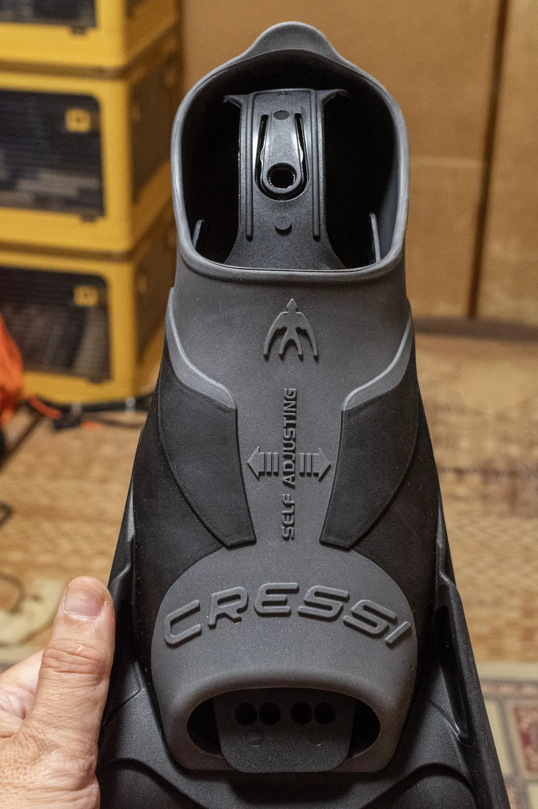
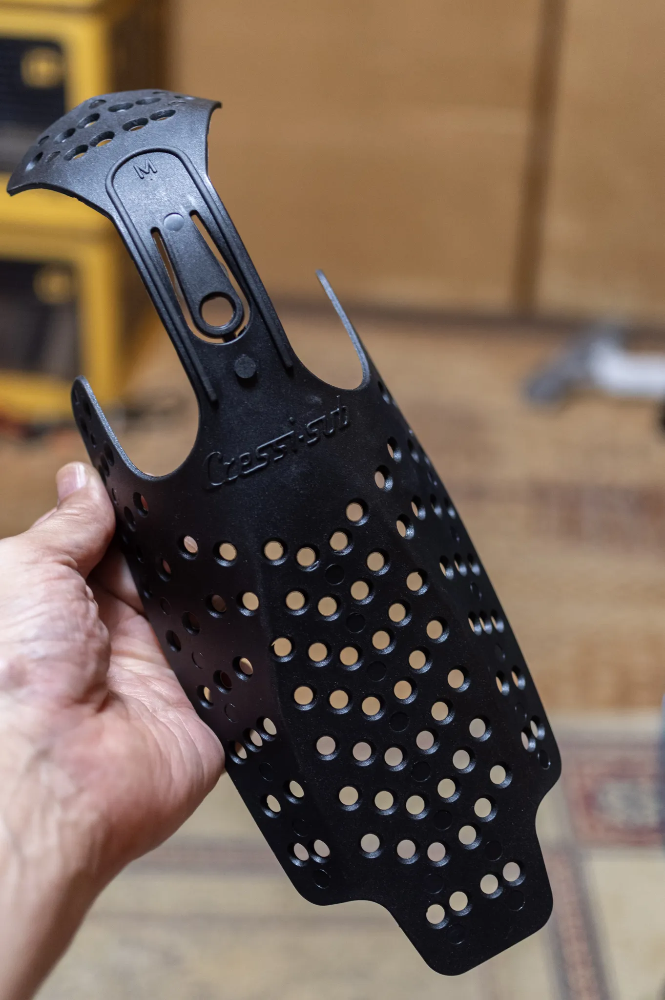
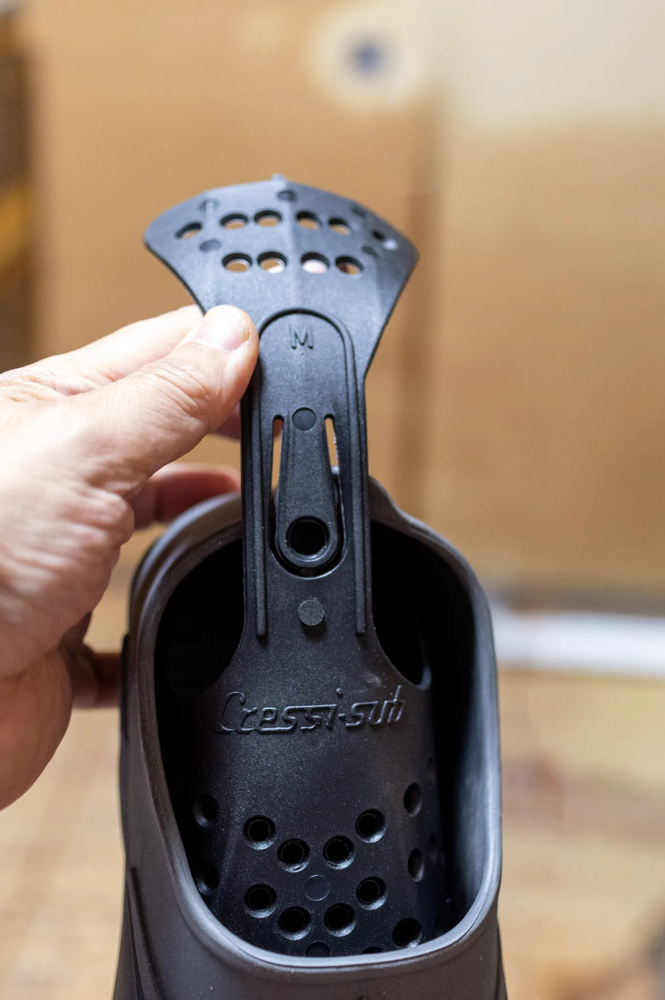

The road Orz passed by 2026 年 06 月
06 月 05 日 ( 金 )
Dive #162 捨てなくてよかった

先日 5 月 24 日に Cressi GARA TURBO BOOST を購入したというエントリーを書きました。
Cressi GARA TURBO シリーズのフィンにはブーツポケットの型崩れ防止用だと思うのですが、樹脂製のシューキーパーのようなものが付いてきます。

取り出してみるとこんな感じです。
ぶっちゃけなんだか細かな穴がたくさんあると思いませんか？一時期の宮崎駿が好きそうです。

宮崎駿は大事な点ではないので別にいいのですが、このシューキーパーはもしかして単にブーツポケットの型崩れ防止のためだけにあるんじゃないのでは？と思ったのでした。
かかとに当たるところをビローンと伸ばすと、穴がたくさんあるベロ状のものがヒール側に出ます。
ここにパラコードを通したり、什器のフックなんかを引っ掛けたら、吊り下げれるやん、と気づいたのでした。
このシューキーパーはパーツとして売られていません。付属しているものを紛失したら終わりです。
ですから Cressi GARA TURBO シリーズを購入されて、壁や什器に吊るして保管したい人は捨てずに取っていたほうがいいかもしれません。
紛失した場合はサードパーティの同様のシューキーパーを探すことになります。
いやぁ、SAFE Mew にもこれを使いたいなぁ。
- Category :
- #Records of Orz's Road
- #ダイビング
- #スキンダイビング
- #フリーダイビング
- #スノーケリング
- #フィン
- #機材
- #Cressi GARA TURBO BOOST